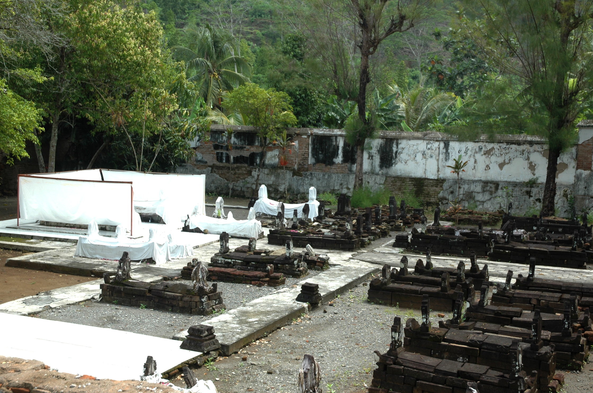

Pemakaman Banyusumurup merupakan pemakaman di Dusun Banyusumurup, Girirejo, Imogiri, Bantul; dekat dengan Makam Imogiri. Kompleks ini ditetapkan sebagai cagar budaya berdasarkan Per.Men Budpar RI No. PM.89/PW.007/MKP/2011. Mulanya, kompleks pemakaman ini digunakan untuk mengebumikan Pangeran Pekik dari Surabaya, beserta anak-anak dan bawahannya yang dihukum mati karena dianggap melawan kekuasaan Mataram Islam. Dari 52 nisan yang ada di Banyusumurup, 32 diantaranya berkaitan dengan Pangeran Pekik.
Pangeran Pekik dan para pengikutnya dieksekusi pada 21 Februari 1659 atas perintah Sunan Amangkurat I. Sampai sekarang, tradisi caos dhahar (upacara ziarah mengirim doa) masih rutin dilakukan oleh juru kunci yang ditugaskan oleh Keraton Kasunanan Surakarta dan Keraton Kasultanan Yogyakarta.

Kompleks pemakaman ini terdiri dari dua halaman yang masing-masing dikelilingi tembok bata dan berbentuk empat persegi panjang. Di Halaman I ada regol tinggi sampai ujung atap yang selalu ditutup dan dibuka hanya bila ada peziarah datang. Halaman II berada di luar halaman I tepatnya di sisi selatan bagian barat. Halaman ini disebut bale panyerenan yang merupakan tempat meletakkan jenazah sebelum dimakamkan. Sekarang tempat ini diapakai sebagai tempat tunggu peziarah.
Sumber :